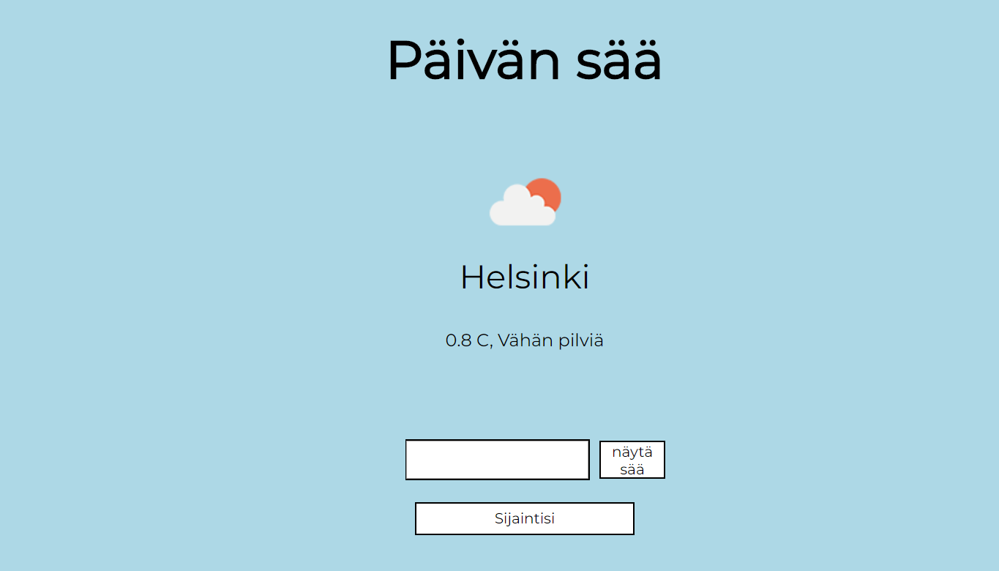

In this project I created a weather app, which uses an API from openweathermap to get weather information all over the world. By default, it displays the local weather at Helsinki. You can use locate button to get weather data from your location. You can also use search to find the current weather from a city, for example London or Paris. The app displays local temperature, gives you a brief description and also shows an icon based on the weather.
Technologies used in this project are HTML5, CSS, Javascript and API.